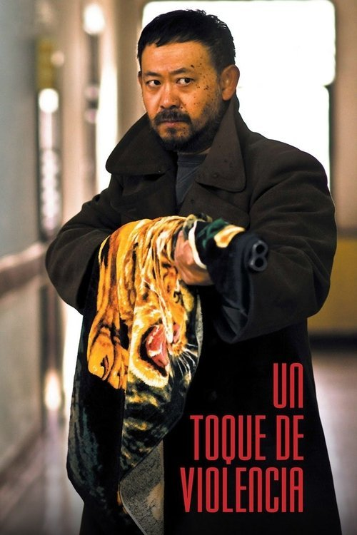

Un toque de violencia (2013)

Plataforma: Disney+
Puntuación IMDb: N/A/10
Duración: N/A
Género: Drama Social
Sinopsis Rápida
En la China contemporánea, cuatro vidas convergen en un retrato desgarrador de violencia y desesperación, donde la corrupción y la opresión conducen a un punto de quiebre.
Sinopsis Detallada
{{SINOPSIS_EXTENDIDA}}
¿Por qué tenés que verla?
- Una mirada honesta y sin tapujos a la realidad social china contemporánea.
- La potencia de la dirección y la fotografía, creando una atmósfera opresiva y visceral.
- Refleja las tensiones sociales y económicas de China, generando un debate sobre las consecuencias del desarrollo desmedido.
- Personajes complejos y creíbles que representan las diversas capas de la sociedad.
Idea Extra
Comparación de la representación de la violencia en 'Un toque de violencia' con otras películas chinas que abordan temas similares, analizando las diferentes perspectivas y estilos cinematográficos.